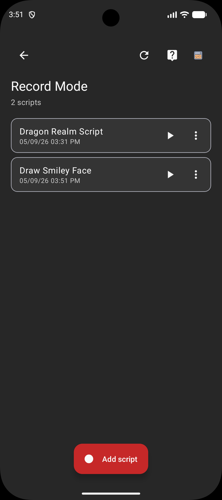
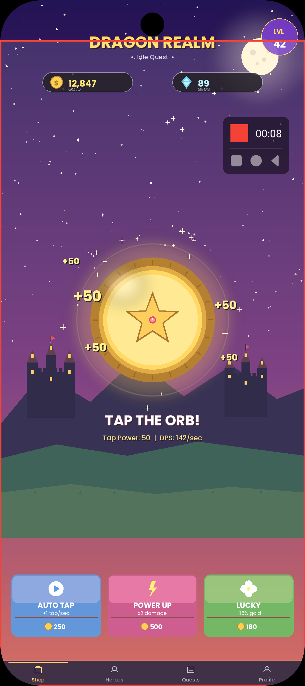
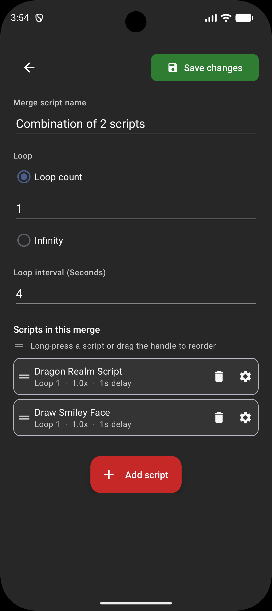
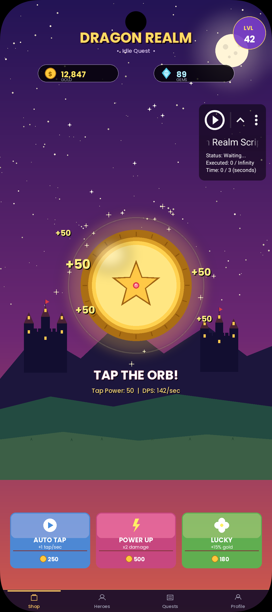

§01.1 · capture
Records any one-finger gesture.
Taps, swipes, multi-step sequences. Each recording saved with name, playback speed, and wait between repeats.
Record once. Replay forever.

Three primary surfaces. Each replaces a chore you used to do with your thumb.

Taps, swipes, multi-step sequences. Each recording saved with name, playback speed, and wait between repeats.

Per-step playback speed. Per-step wait. Reorder by drag. Build a long routine once, replay forever.

Play. Stop. Edit. Switch back to recording. 48dp, drag-anywhere, always reachable. Above games, browsers, anything.
Three steps. Same loop you see in the icon.
Tap, swipe, drag. Touch Recorder watches via Accessibility and saves the gesture stream.
Pick speed, repeats, wait between runs. Change any of them mid-playback. No restart.
Hit Play. Floating controls stay on top of any app. Stop or jump back to record in one tap.
Counter ticks while recording or replaying. Built-in routine-length calculator estimates total runtime.
Live changes apply on next dispatch. No flicker, no restart, no re-arming the recording.
Rebuilt from the ground up in v2. Faster recording engine. Spotlight tour walks you through first-run.
Each recording remembers its own playback speed and wait. Replay exactly as recorded — or change before saving.
Recordings stay on the device. Accessibility dispatch is the only way to make this work without root — that's the platform, not a design choice.
Smarter playback, sharper design, sturdier recording. Now with on-screen tap and swipe feedback. Currently on Open Testing.
Waits for the right app to load before tapping. Stops if the app never shows up.
See every step with the app it was captured in. Tweak wait time or app-lock per step.
Material 3 surfaces. Recording engine rebuilt from scratch in v2.
Cold-start race fixed. Watchdog hardened. Foreground-service lifecycle audit-pinned.
UMP consent for EU/UK/Switzerland. First-run spotlight tour walks you through the basics.
Tap rings and swipe trails on screen as your script runs. On-screen labels for Back, Home, and Recent apps too. Toggle in Settings.
Beta — email jhapps.touchrepeat@gmail.com if anything's off. Thanks for testing.
Recordings stay on the device. No data sale. Network calls are limited to ads and billing.
Free, with optional Premium. Android 7.0 and up.